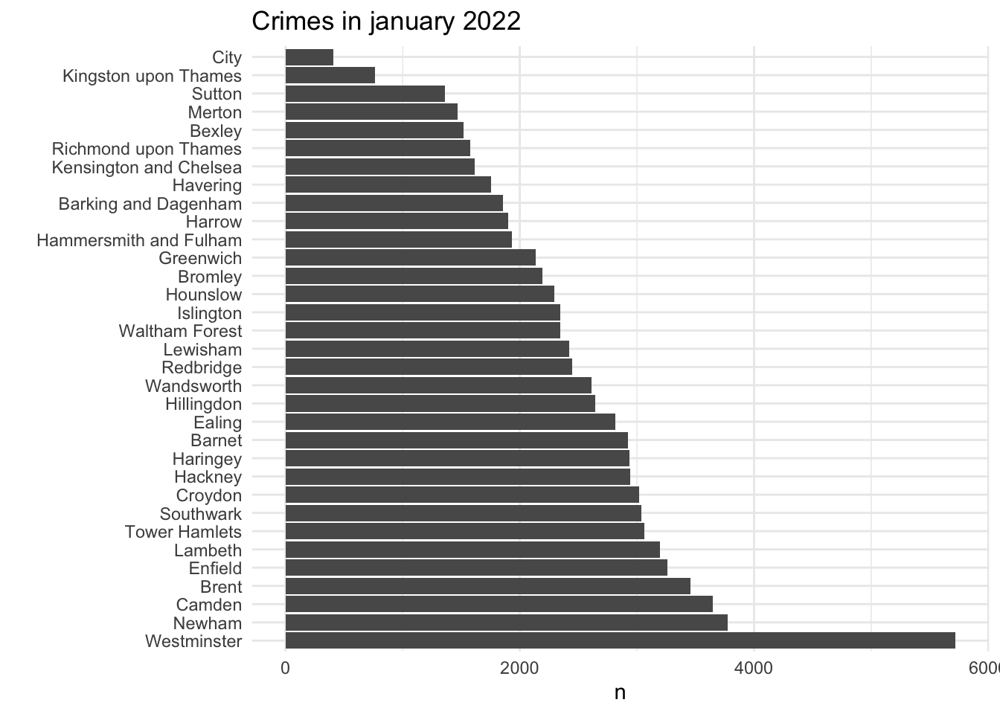

Code
library(tidyverse)
library(sf)
library(ggforce)
library(spatstat)
library(stars)
library(leaflet)
library(leafem)library(tidyverse)
library(sf)
library(ggforce)
library(spatstat)
library(stars)
library(leaflet)
library(leafem)We are going to use the dataset from the London police records about crimes in the city. We are selecting a subset on January 2021 and 2022 to compare the differences.
london <- st_read('data/Londondistricts_UTM30.shp')
jan22 <- st_read('data/CrimeLondon_Jan2021_UTM30N.shp') |>
st_transform(st_crs(london)) |>
st_intersection(london)
jan22 <- jan22 |>
mutate(Longitude = st_coordinates(jan22)[, 'X'],
Latitude = st_coordinates(jan22)[, 'Y'])
jan21 <- read.csv('data/2021-01/2021-01-metropolitan-street.csv') |>
filter(complete.cases(Longitude)) |>
st_as_sf(coords = c('Longitude', 'Latitude'), crs = 4326) |>
st_transform(st_crs(london)) |>
st_intersection(london)
jan21 <- jan21 |>
mutate(Longitude = st_coordinates(jan21)[, 'X'],
Latitude = st_coordinates(jan21)[, 'Y'])ggplot(jan21) +
geom_sf(data = london) +
geom_sf(aes(col = Crime.type), size = .1) +
geom_point(aes(x = mean(Longitude),
y = mean(Latitude)), col = 'red', size = 5) +
labs(title = 'Crimes in January 2021', x = '', y = '', col = 'Crime type') +
theme_minimal()ggplot(jan22) +
geom_sf(data = london) +
geom_sf(aes(col = Crime_type), size = .1) +
geom_point(aes(x = mean(Longitude),
y = mean(Latitude)), col = 'red', size = 5) +
labs(title = 'Crimes in January 2022', x = '', y = '', col = 'Crime type') +
theme_minimal()# Centroid January 2021
meanlong21 <- mean(jan21$Longitude)
meanlat21 <- mean(jan21$Latitude)
# Centroid January 2022
meanlong22 <- mean(jan22$Longitude)
meanlat22 <- mean(jan22$Latitude)
# Standard deviation January 2021
sdlong21 <- sd(jan21$Longitude)
sdlat21 <- sd(jan21$Latitude)
# Standard deviation January 2022
sdlong22 <- sd(jan22$Longitude)
sdlat22 <- sd(jan22$Latitude)
# Distance between 2021 and 2022
(dist <- sqrt((abs(mean(jan21$Longitude)-mean(jan22$Longitude)))^2 + (abs(mean(jan21$Latitude)-mean(jan22$Latitude)))^2))[1] 100.7557# Standard distance 2021
(standard_distance2021 <- sqrt(sum(((jan21$Longitude-meanlong21)^2+(jan21$Latitude-meanlat21)^2))/(nrow(jan21))))[1] 12565.91(standard_distance2022 <- sqrt(sum(((jan22$Longitude-meanlong22)^2+(jan22$Latitude-meanlat22)^2))/(nrow(jan22))))[1] 12318.38The distance between the centers is 100.7556941 meters, meaning that the overall spatial distribution of crimes has not change much during the two years. This could be a little misleading, as we will see later, because it gives the impression that the location of crimes has not changed, and that the places were crime was high in 2021 are the same in 2022.
circleFun <- function(center = c(0,0),diameter = 1, npoints = 100){
r = diameter / 2
tt <- seq(0,2*pi,length.out = npoints)
xx <- center[1] + r * cos(tt)
yy <- center[2] + r * sin(tt)
return(data.frame(x = xx, y = yy))
}
circle21 <- circleFun(c(meanlong21,meanlat21),standard_distance2021*2,npoints = 100)We can better visualize the spread of crime around the center by using the standard distance and the standard deviation, note that in the first case the spread only considers the standard distance as a radius, so the spread is constant in every direction, in the second case we are using the standard deviation in both directions (N-S, W-E) to build an ellipse:
ggplot(jan21) +
geom_sf(data = london) +
#geom_sf(aes(col = Crime.type)) +
geom_point(aes(x = mean(Longitude),
y = mean(Latitude)), col = 'red', size = 5) +
geom_path(data = circle21, aes(x,y)) +
labs(title = 'Crimes in January 2021', x = '', y = '', caption = 'with center and standard distance') +
theme_minimal()ggplot(jan21) +
geom_sf(data = london) +
#geom_sf(aes(col = Crime.type)) +
geom_point(aes(x = mean(Longitude),
y = mean(Latitude)), col = 'red', size = 5) +
geom_ellipse(aes(x0 = meanlong21, y0 = meanlat21, a = sdlong21, b = sdlat21, angle = 0), n = 360) +
labs(title = 'Crimes in January 2021', x = '', y = '', caption = 'with center and standard deviation') +
theme_minimal()Now we are going to rank the Boroughs based on their crime count:
jan21 |>
count(name) |>
mutate(name = fct_reorder(name, n, .desc = TRUE)) |>
ggplot() +
geom_bar(aes(y = name, x = n), stat = 'identity') +
labs(y = '', title = 'Crimes in january 2021') +
theme_minimal()jan22 |>
count(name) |>
mutate(name = fct_reorder(name, n, .desc = TRUE)) |>
ggplot() +
geom_bar(aes(y = name, x = n), stat = 'identity') +
labs(y = '', title = 'Crimes in january 2022') +
theme_minimal()
We are going to focus on a specific type of crime, Bicycle theft:
jan21 |>
filter(Crime.type == 'Bicycle theft') |>
ggplot() +
geom_sf(data = london) +
geom_sf(size = .001) +
geom_point(aes(x = mean(Longitude),
y = mean(Latitude)), col = 'red', size = 5) +
labs(title = 'Bicycle theft in January 2021', x = '', y = '') +
theme_minimal()jan22 |>
filter(Crime_type == 'Bicycle theft') |>
ggplot() +
geom_sf(data = london) +
geom_sf(size = .001) +
geom_point(aes(x = mean(Longitude),
y = mean(Latitude)), col = 'red', size = 5) +
labs(title = 'Bicycle theft in January 2022', x = '', y = '') +
theme_minimal()At a first glance there is not much variation in the spatial distribution and clustering between the two years, as we can see in the graph above, even the mean center seem to be really close for the two years. I we look at the rank of Boroughs in the graph below we can now see changes in the position of the Boroughs between the two years. The categories (low, middle, and high) were constructed using thresholds of 0-25, 25-75 and >75 for low, middle and high bicycle theft respectively. We can see that during 2022 there are four Boroughs that are in the high category, compared to three in 2021. The top Borough in 2021, Tower Hamlets, lowered the number of bicycle thefts in 2022 and now appears in the middle category.
jan21 |>
filter(Crime.type == 'Bicycle theft') |>
count(name) |>
mutate(name = fct_reorder(name, n, .desc = FALSE),
Category = cut(n,
breaks=c(0, 25, 75, Inf),
labels=c("low","middle","high"))) |>
ggplot() +
geom_bar(aes(y = name, x = n, fill = Category), stat = 'identity') +
labs(y = '', x = '', title = 'Bicycle theft in january 2021') +
theme_minimal() +
scale_fill_viridis_d()jan22 |>
filter(Crime_type == 'Bicycle theft') |>
count(name) |>
mutate(name = fct_reorder(name, n, .desc = FALSE),
Category = cut(n,
breaks=c(0, 25, 75, Inf),
labels=c("low","middle","high"))) |>
ggplot() +
geom_bar(aes(y = name, x = n, fill = Category), stat = 'identity') +
labs(y = '', x = '', title = 'Bicycle theft in january 2022') +
theme_minimal() +
scale_fill_viridis_d()We are going to perform Point Pattern Analysis using the package spatstat(Baddeley, Turner, and Rubak 2021) and using as a reference the tutorial made by Veronesi (Veronesi 2015) and the book developed by Pebesma and Bivand (Pebesma and Bivand 2022). Point patterns have an observation window and we can define them with the function as.owin having as input the London boundaries. Point patterns in spatstat are objects of the class ppp, if we do not define an observation window, it will use the bounding box of the dataset.
To test for homogeneity, one could carry out a quadrat count, using an appropriate quadrat layout, in this case we are using a 4x4 grid that is also clipped to the shape of the observation window.
window <- as.owin(london)
jan21 <- jan21 |>
filter(!duplicated(jan21),
Crime.type == 'Bicycle theft')
pp1 <- ppp(x = st_coordinates(jan21)[, 1],
y = st_coordinates(jan21)[, 2],
window = window)
q1 = quadratcount(pp1, nx=4, ny=4)
plot(q1, main = "")quadrat.test(pp1, nx=4, ny=4)
Chi-squared test of CSR using quadrat counts
data: pp1
X2 = 1205.3, df = 15, p-value < 2.2e-16
alternative hypothesis: two.sided
Quadrats: 16 tiles (irregular windows)By using the function quadrat.test we can test for homogeneity, we have a p-value < 0.01 which means that we can reject the null hypothesis and assume that our quadrants are irregular windows.
Kernel densities estimates can be computed using density, briefly, the function computes a fixed-bandwidth kernel estimate (Diggle 1985) of the intensity function of the point process that generated the point pattern x. Kernel shape and bandwidth can be controlled, the amount of smoothing is determined by the arguments sigma, varcov and adjust. Here, we test 4 different functions to specify the bandwidth parameter sigma using cross validation, bw.diggle, bw.ppl, and bw.scott with two variations (Baddeley, Turner, and Rubak 2021).
den1 <- density.ppp(pp1, sigma = bw.diggle(pp1),edge=T)
den2 <- density.ppp(pp1, sigma = bw.ppl(pp1),edge=T)
den3 <- density.ppp(pp1, sigma = bw.scott(pp1)[2],edge=T)
den4 <- density.ppp(pp1, sigma = bw.scott(pp1)[1],edge=T)s1 <- st_as_stars(den1)
s2 <- st_as_stars(den2)
st_crs(s2) <- st_crs(london)
s3 <- st_as_stars(den3)
s4 <- st_as_stars(den4)
ggplot() +
geom_stars(data = s1) +
geom_sf(data = london, alpha = 0, col = 'white', size = .1) +
theme_minimal() +
theme(legend.position = 'none') +
labs(x ='', y='', caption = 'sigma = bw.diggle, h = 207.29') +
scale_fill_viridis_c(option = 'plasma')ggplot() +
geom_stars(data = s2) +
geom_sf(data = london, alpha = 0, col = 'white', size = .1) +
theme_minimal() +
theme(legend.position = 'none') +
labs(x ='', y='', caption = 'sigma = bw.ppl, h = 973.66') +
scale_fill_viridis_c(option = 'plasma')ggplot() +
geom_stars(data = s3) +
geom_sf(data = london, alpha = 0, col = 'white', size = .1) +
theme_minimal() +
theme(legend.position = 'none') +
labs(x ='', y='', caption = 'sigma = bw.scott[1], h = 1914.78') +
scale_fill_viridis_c(option = 'plasma')ggplot() +
geom_stars(data = s4) +
geom_sf(data = london, alpha = 0, col = 'white', size = .1) +
theme_minimal() +
theme(legend.position = 'none') +
labs(x ='', y='', caption = 'sigma = bw.scott[2], h = 2349.69') +
scale_fill_viridis_c(option = 'plasma')
leaflet() |>
addTiles() |>
addStarsImage(x = s2,
opacity = .5,
colors = 'plasma',
project = T)The nearest neighbour distance distribution function (also called the event-to-event or inter-event distribution) of a point process X is the cumulative distribution function G of the distance from a typical random point of X to the nearest other point of X. This algorithm estimates the nearest neighbour distance distribution function G from the point pattern X. It assumes that X can be treated as a realisation of a stationary (spatially homogeneous) random spatial point process in the plane, observed through a bounded window. The window (which is specified in X as Window(X)) may have arbitrary shape (Baddeley, Turner, and Rubak 2021).
The K function (variously called Ripleys K-function and the reduced second moment function) of a stationary point process X is defined so that lambda K(r) equals the expected number of additional random points within a distance r of a typical random point of X (Ripley 1977). Here lambda is the intensity of the process, i.e. the expected number of points of X per unit area. The K function is determined by the second order moment properties of X. This routine Kest estimates the K function of a stationary point process, given observation of the process inside a known, bounded window (Baddeley, Turner, and Rubak 2021).
plot(Gest(pp1),main="G-function")plot(Kest(pp1),main="K-function")We can see a similar pattern both in the G and K functions, the observed pattern in the G-function is above the poisson distribution, meaning that the observations follow a clustered distribution, this pattern increases along r until it reaches a plateau around r = 600. In the K-function we see the same trend, at very low values of r it is not possible to tell which type of distribution it has, but as r increases it is notable that is has a clustered distribution, as r continues to increase the observations separate from the clustered distribution.